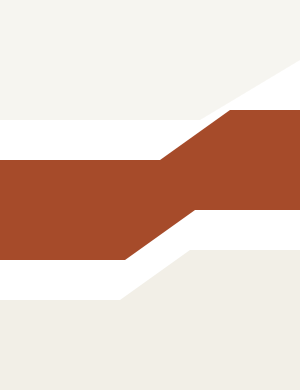
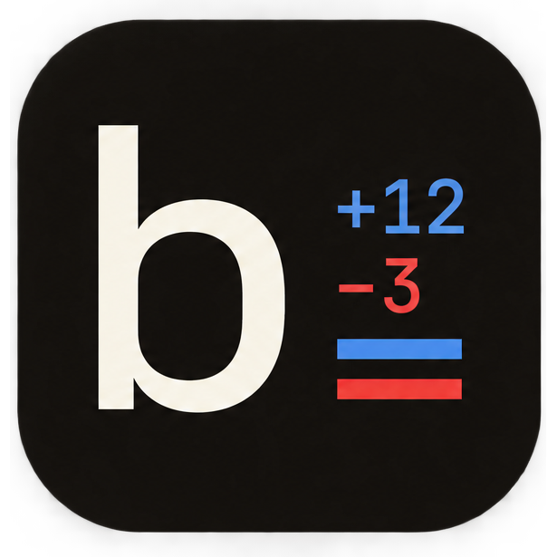

Epoch AI Labs
Research Lab · 2026
Independent research lab testing model behavior, agent coordination, and developer security tooling.
Based in Ahmedabad, India · Working globally
I build developer tools and security systems for autonomous coding agents. Most setups let models run commands blindly, so I make tools like Blueline and Oot to sandbox package installs and govern how multi-agent code changes get merged.
I run Epoch AI Labs, an independent research lab testing model behavior and agent infrastructure. We have zero connection to epoch.ai.
Outside of code, I spend my days solving physics, chemistry, and math problems for JEE prep.

Research Lab · 2026
Independent research lab testing model behavior, agent coordination, and developer security tooling.

Open Source · Security · 2026
Approve the change, not the download. Sandboxed package extraction, release delta calculations against verified baselines, and approval gates before install scripts run.
npx blueline install <pkg>
Open Source · Developer Tool
Local-first file management server for LLM agents. Adds safe directory operations, dry-run safety gates, and semantic file tagging.
npx file-organizer-mcp
Open Source · Code Governance · 2026
A court for code. Resolves intent disputes, visibility policies, and semantic merge conflicts when multiple agents work in one repo.
git clone Epoch-AI-Lab/oot
Created my GitHub account and started learning Python, writing the foundation for the tools I ship today.
Started an independent research lab testing model behavior and agent infrastructure. Launched theepoch.in.
Built File Organizer MCP, Blueline, and Oot to tackle security and governance for autonomous agents.
JEE physics, chemistry, and math preparation alongside open-source AI tooling.
"The interesting work begins where software stops being a tool and starts becoming a collaborator."
If you've scrolled this far, you might be interested in what I do.
Let's TalkResearch ideas, open-source collaboration, or thoughtful conversations about AI are all welcome.